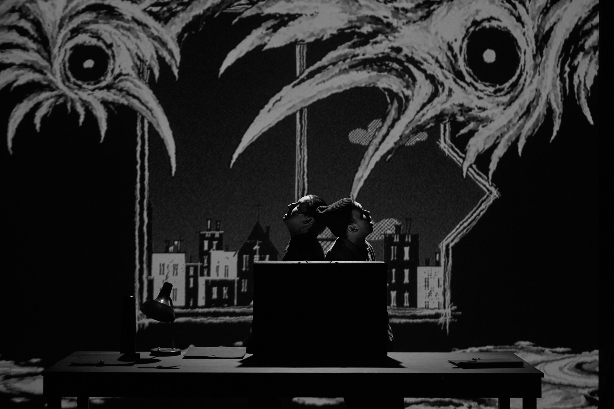
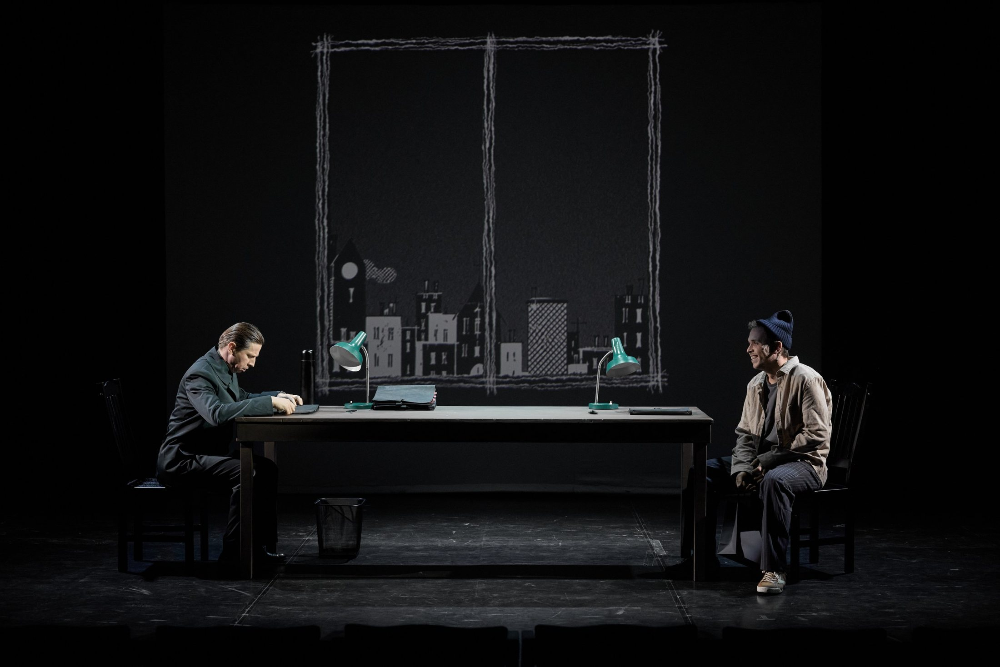
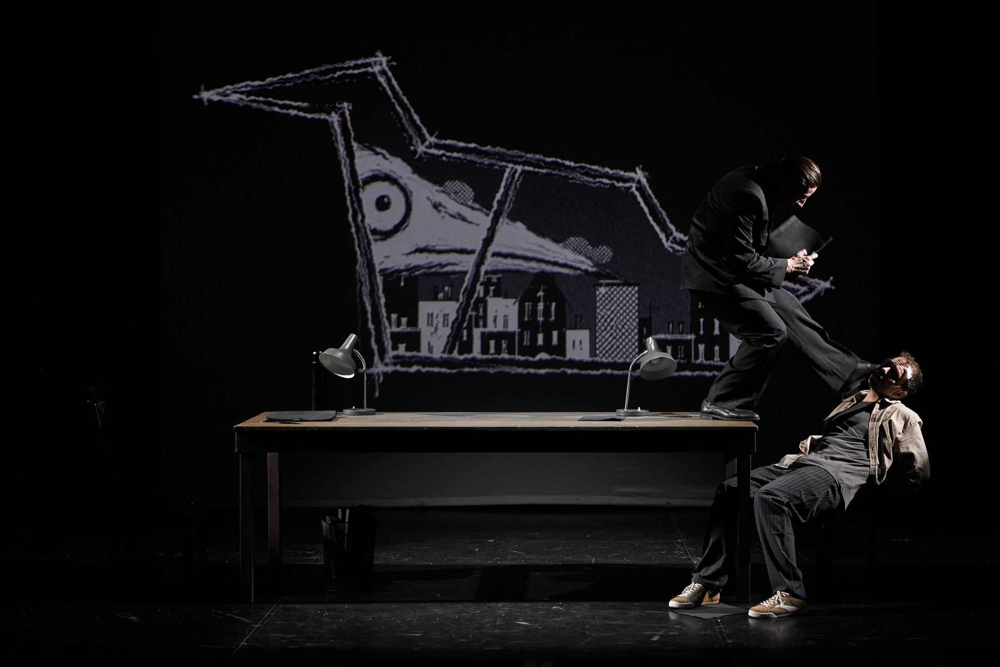

Академия смеха
Режиссёр — Алексей Золотовицкий
Премьера — 7 ноября 2026
Видеохудожник — Екатерина Чебышева
Премьера — 7 ноября 2026
Видеохудожник — Екатерина Чебышева

О проекте
Одним из центральных визуальных образов спектакля становится ворон — воплощение совести цензора, отражение его внутреннего конфликта. На протяжении спектакля в видеоконтенте неоднократно появляются разнообразные формы птиц, создавая повторяющийся художественный мотив.


Академия смеха · 2026
Все проекты →